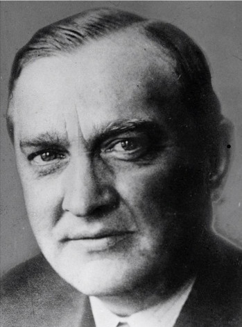
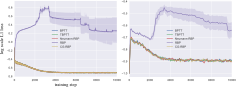
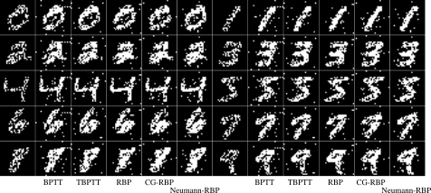
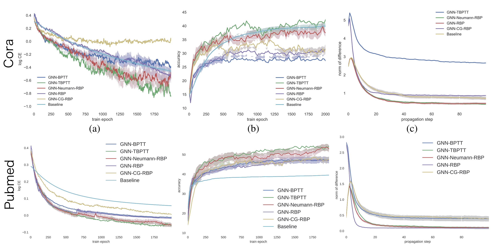
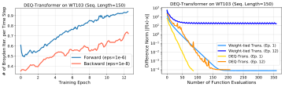
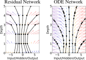
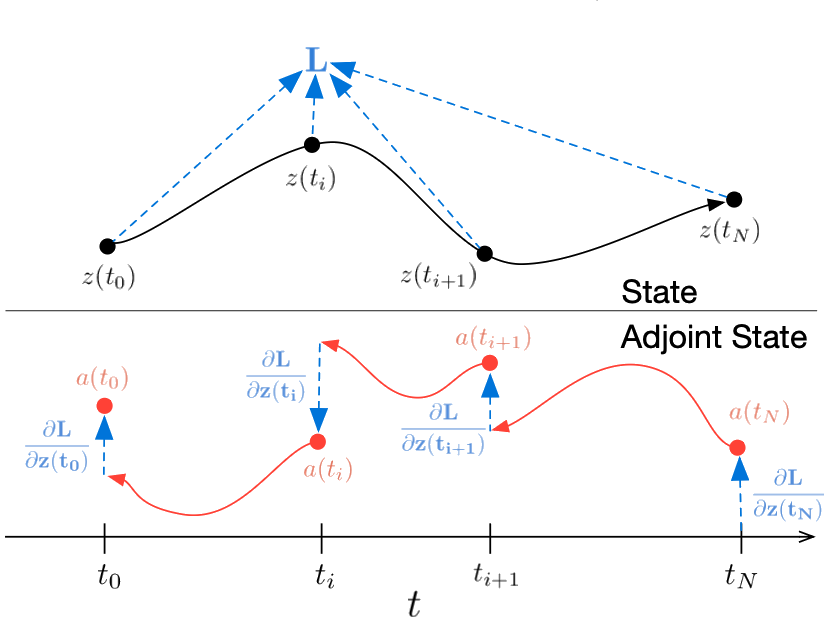
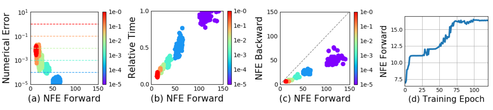

Lecture 2 · Fixed Points, Feedback, and Adaptive Computation
Fixed-Point Computation
and Implicit Differentiation
We build working familiarity with the mathematical tools — contraction mappings
(Banach fixed-point theorem) and the implicit function theorem — then show how they
underpin a 35-year arc: from Almeida–Pineda (1987) through Recurrent Back-Propagation
to modern Deep Equilibrium Models.
presented by
Sergey Plis


Course Arc
The unifying theme of this course is replacing fixed-depth feed-forward computation with iterative, stateful computation — whether via recurrence, equilibrium solving, adaptive depth, explicit memory, or learned test-time updates — so that models can allocate effort where it is needed.
L1
Preliminaries
L2
Fixed points
L3
Adaptive depth
L4
Introspection
L5
Memory
L6
Learned update rules
Roadmap
-
Motivation
Fixed-point iteration through square-root computation
-
Foundations
Brouwer, Banach, and implicit function theorem
-
Recurrent Backpropagation
From BPTT to implicit gradients (Almeida-Pineda, Liao)
-
Modern Echoes
DEQ, phantom gradients, and the NODE connection
-
Why This Matters
Convergence guarantees vs universal computation
Motivation
Fixed Points as Computation
Computing $\sqrt{28}$
Start with a rough guess, then repeatedly correct it.
- We want $\sqrt{28}$ and start from $x_1 = 5$.
- Write $\sqrt{28} = 5 + \alpha_1$, where $\alpha_1$ is a small correction.
- Square both sides, estimate $\alpha_1$, and update the guess.
- Use the corrected value as the next iterate and repeat.
Expand, Then Drop a Tiny Term
\[
28 = (5+\alpha_1)^2 = 25 + 10\alpha_1 + \alpha_1^2
\]
\[
28 - 25 = 3 = 10\alpha_1 + \alpha_1^2
\]
\[
3 \approx 10\alpha_1 + \textcolor{#93a1a1}{\alpha_1^2}
\quad \Rightarrow \quad
\alpha_1 \approx 0.3
\]
Then $x_2 = 5 + 0.3 = 5.3$.
From Correction to Expression
\[
x_{n+1}=x_n-\frac{x_n^2-a}{2x_n}
=\frac{x_n^2+a}{2x_n}
=\frac12\left(x_n+\frac{a}{x_n}\right)
\]
- This is the Babylonian/Newton update for square roots.
- Works for any $a > 0$ with a positive initial guess.
Why It Converges
Let $r=\sqrt{a}$ and $x_{n+1}=\frac12\left(x_n+\frac{a}{x_n}\right)$.
\[
x_{n+1}-r=\frac{(x_n-r)^2}{2x_n}\ge 0,
\]
so after one step the iterate is above the root.
\[
x_n>r\Rightarrow x_{n+1}-x_n=\frac{a-x_n^2}{2x_n}<0,
\]
so iterates decrease while staying $\ge r$.
Therefore $\{x_n\}$ is decreasing and bounded below by $r$, hence convergent; the limit satisfies
$L=\frac12\left(L+\frac{a}{L}\right)\Rightarrow L^2=a\Rightarrow L=\sqrt{a}$.
The iteration converges. Next question: how fast?
That local rate is governed by the derivative (or Jacobian) at the fixed point.
Derivative as Local Error Gain
$x_{n+1}=g(x_n),\quad g(r)=r,\quad e_n=x_n-r$
$e_{n+1}=g(x_n)-g(r)$
$g(x_n)=g(r)+g'(r)(x_n-r)+o(x_n-r)$
$e_{n+1}=g'(r)e_n+o(e_n)$
Local stability is controlled by $g'(r)$.
Derivative Bound $\Rightarrow$ Contraction
If $|g'(r)|<1$, the fixed point is locally attracting.
A stronger sufficient condition: $|g'(x)|\le q<1$ near $r$.
Then (Mean Value Theorem): $|g(x)-g(y)|\le q|x-y|$, so $g$ is a contraction.
Hence local geometric convergence: $|e_{n+1}|\le q|e_n|$.
In higher dimensions: replace $g'$ with Jacobian $J_g$ and $|\cdot|$ with $\|\cdot\|_2$.
Pseudocode
Input: a > 0, initial guess x > 0
repeat:
x_next = 0.5 * (x + a / x)
x = x_next
until converged
return x
Two Real Algorithms, Different Speeds
- Bisection (slow, robust): maintain an interval containing $\sqrt{x}$ and repeatedly halve it.
- Babylonian/Newton (fast): iterate $u_{k+1}=\frac12\left(u_k+\frac{x}{u_k}\right)$.
- Both converge to the same root; they differ in convergence rate.
Bisection (Historical Slow Baseline)
def sqrt_bisection(x, lo=0.0, hi=None, tol=1e-10, max_iter=80):
if hi is None:
hi = max(1.0, x)
hist = []
for _ in range(max_iter):
mid = 0.5 * (lo + hi)
hist.append(mid)
if abs(mid*mid - x) < tol or (hi - lo) < tol:
break
if mid*mid < x:
lo = mid
else:
hi = mid
return hist
Guaranteed but linear convergence: interval length halves each step.
Babylonian / Newton in Python
def sqrt_babylonian(x, u0, tol=1e-10, max_iter=20):
u = abs(u0)
hist = [u]
for _ in range(max_iter):
denom = u if abs(u) > 1e-12 else 1e-12
u_next = 0.5 * (u + x / denom)
hist.append(u_next)
if abs(u_next - u) < tol:
break
u = u_next
return hist
Same objective, usually far fewer iterations.
Compare Bisection vs Babylonian
Run in-browser Python to compare convergence behavior in real time.
Bisection
Click "Run Python" to load runtime and execute.
Babylonian loop
From Example to General Form
$$z = f(x, z, \theta)$$
- Bisection and Babylonian are both special cases of iterative maps.
- In general: $x$ selects the task, $z$ is the state, and $\theta$ shapes the update map.
- If $z$ is defined only implicitly at equilibrium, how do we differentiate w.r.t. $\theta$?
- To answer that, we need existence, uniqueness, and differentiability guarantees.
Motivation Wrap-Up
- Same fixed point, different algorithms: bisection is robust, Babylonian is fast
- Initialization/bracketing changes practical compute effort
- This motivates writing computation as equilibrium: $z = f(x, z, \theta)$
- Training now depends on math conditions, not just forward iteration
Next: Brouwer (existence), Banach (uniqueness/convergence), and IFT (differentiability).
Foundations
Why Implicit Gradients Work
L.E.J. Brouwer
Brouwer: Existence
Every continuous function from a convex compact set $K$ to itself has a fixed point.

Stefan Banach
Uniqueness + Iterative Computability
-
If $T$ is a contraction on a complete metric space, \[d(T(x), T(y)) \le q\,d(x,y),\; 0 \le q < 1\] then there is a unique fixed point $x^*$.
-
Computability claim: the fixed point is obtained algorithmically by iteration. Start from any $x_0$, apply $x_{n+1}=T(x_n)$, and $x_n\to x^*$.
-
Practical check (local): in 1D, $|T'(r)|<1$; in higher dimensions, $\left\|J_f(\vec{z}^{\,*})\right\|_2<1$ (or a uniform bound $\left\|J_f(\vec{z})\right\|_2\le q<1$ nearby) gives contraction. For the square-root map, $T'(\sqrt{a})=0$, matching the fast local convergence we observed.
Implicit Function Theorem
Why this theorem: it guarantees local existence, uniqueness, and smoothness, which licenses the derivative formula on the next slide.
Theorem (IFT, local). Let $F:\mathbb{R}^2\to\mathbb{R}$ be continuously differentiable near $(x_0,y_0)$ and satisfy $F(x_0,y_0)=0$. If $\dfrac{\partial F}{\partial y}(x_0,y_0)\neq 0$, then there exists a neighborhood of $x_0$ and a unique differentiable function $y(x)$ with $y(x_0)=y_0$ such that $F(x,y(x))=0$ for nearby $x$.
Translation: a nonzero partial in $y$ means the constraint is locally solvable for $y$ as a smooth function of $x$.
Example: $x^2+y^2=1$ defines $y(x)$ near $(0,1)$ since $\frac{\partial F}{\partial y}=2y$ and $\frac{\partial F}{\partial y}(0,1)=2\neq0$; not near $(1,0)$ where $\frac{\partial F}{\partial y}(1,0)=0$.
Historical note: modern rigorous form often attributed to Ulisse Dini (1870s), building on Cauchy-era analysis.
Implicit Differentiation Formula
Suppose $F(x,y)=0$ defines $y$ implicitly as a function of $x$.
Constraint step: \(F(x+\Delta x,\,y+\Delta y)-F(x,y)=0\).
\[
F(x+\Delta x,\,y+\Delta y)-F(x,y)
\approx
\frac{\partial F}{\partial x}\,\Delta x + \frac{\partial F}{\partial y}\,\Delta y
\]
\[
\frac{\partial F}{\partial x}\,\Delta x + \frac{\partial F}{\partial y}\,\Delta y \approx 0
\]
If \(\dfrac{\partial F}{\partial y}\neq 0\), then
\[
\frac{dy}{dx} = -\frac{\partial F/\partial x}{\partial F/\partial y}.
\]
Taylor gives the approximation; the constraint gives the equality to zero.
IFT for Implicit Layers
Write equilibrium as
\[
\Psi(\vec{z},\vec{x},\vec{\theta}) = \vec{z} - f(\vec{x},\vec{z},\vec{\theta}) = \vec{0}.
\]
Differentiate w.r.t. parameters:
\[
\frac{\partial \vec{z}^{\,*}}{\partial \vec{\theta}} =
\left(I - \frac{\partial f}{\partial \vec{z}}\Big|_{\vec{z}^{\,*}}\right)^{-1}
\frac{\partial f}{\partial \vec{\theta}}\Big|_{\vec{z}^{\,*}}.
\]
- IFT condition: the Jacobian in $\vec{z}$ is locally invertible.
- Sign check: general form is $\frac{\partial \vec{z}^{\,*}}{\partial\vec{\theta}}=-\left(\frac{\partial\Psi}{\partial \vec{z}}\right)^{-1}\frac{\partial\Psi}{\partial\vec{\theta}}$; here $\frac{\partial\Psi}{\partial\vec{\theta}}=-\frac{\partial f}{\partial\vec{\theta}}$, so the two minus signs cancel.
- This is the exact bridge from fixed-point solving to trainable implicit models.
- Next section: this inverse appears as an adjoint linear solve (RBP).
Foundations Wrap-Up
- Brouwer: fixed points exist
- Banach: fixed point is unique and computable by iteration
- IFT: fixed points are differentiable under regularity
- These are the mathematical prerequisites for RBP and DEQ
Next: from BPTT to implicit gradients at steady state.
Recurrent Backpropagation
RNN as a Map (recap from Lecture 1)

\[
\vec{h}_{t+1}=F(\vec{x}_t,\vec{\theta},\vec{h}_t),\qquad L=\ell(\vec{h}_T)
\]
We now derive BPTT step by step from this unrolled computation graph.
Back Propagation Through Time
\(\frac{\partial L}{\partial \vec{h}^{\,T}}\)
\(\frac{\partial \vec{h}^{\,T}}{\partial \vec{w}^{\,T}}\)
\(\frac{\partial \vec{h}^{\,T}}{\partial \vec{h}^{\,T-1}}\)
\(\frac{\partial \vec{h}^{\,T-1}}{\partial \vec{w}^{\,T-1}}\)
\[
\frac{\partial L}{\partial \vec{w}^{\,T}} = \frac{\partial L}{\partial \vec{h}^{\,T}}\frac{\partial \vec{h}^{\,T}}{\partial \vec{w}^{\,T}}
\]
\[
\frac{\partial L}{\partial \vec{w}^{\,T-1}} = \frac{\partial L}{\partial \vec{h}^{\,T}}\frac{\partial \vec{h}^{\,T}}{\partial \vec{h}^{\,T-1}}\frac{\partial \vec{h}^{\,T-1}}{\partial \vec{w}^{\,T-1}}
\]
BPTT with Shared Parameters
\[
\frac{\partial L}{\partial \vec{w}} =
\frac{\partial L}{\partial \vec{h}^{\,T}}
\left(
\frac{\partial \vec{h}^{\,T}}{\partial \vec{w}}+
\frac{\partial \vec{h}^{\,T}}{\partial \vec{h}^{\,T-1}}\frac{\partial \vec{h}^{\,T-1}}{\partial \vec{w}}+\cdots
\right)
\]
\[
\frac{\partial L}{\partial \vec{w}}=
\frac{\partial L}{\partial \vec{h}^{\,T}}
\sum_{k=1}^{T}
\left(\prod_{i=T-k+1}^{T-1}
J_{F,\vec{h}}\!\left(\vec{x},\vec{w},\vec{h}^{\,i}\right)\right)
\frac{\partial F}{\partial \vec{w}}\!\left(\vec{x},\vec{w},\vec{h}^{\,T-k}\right)
\]
- Here $\vec{w}^{\,t}$ means the copy of shared parameters at unrolled step $t$.
- This is a sum of all temporal influence paths.
If We Iterate to Convergence
Fix the input and repeatedly apply the same update map.
\[
\vec{h}^{\,t+1}=F(\vec{x},\vec{w}_F,\vec{h}^{\,t})
\]
At convergence, the unrolled RNN is a fixed-point layer.
\[
\vec{h}^{\,*}=F(\vec{x},\vec{w}_F,\vec{h}^{\,*})
\]
The final activation - the fixed-point of $F$ at $\vec{x}$ - is passed on to the next layer of the model that finally generates the output $\vec{y}$.
\[
\vec{y}=G(\vec{w}_G,\vec{h}^{\,*})
\]
Differentiate the Fixed Point
Define a residual map at fixed input:
\[
\Psi(\vec{w}_F,\vec{h}) = \vec{h} - F(\vec{x},\vec{w}_F,\vec{h})
\]
At equilibrium: \(\Psi(\vec{w}_F,\vec{h}^{\,*})=\vec{0}\).
Take a total derivative w.r.t. \(\vec{w}_F\) (because \(\vec{h}^{\,*}=\vec{h}^{\,*}(\vec{w}_F)\)):
\[
\frac{d}{d\vec{w}_F}\,\Psi\!\left(\vec{w}_F,\vec{h}^{\,*}(\vec{w}_F)\right)=\vec{0}
\]
\[
\frac{\partial \Psi\!\left(\vec{w}_F,\vec{h}^{\,*}\right)}{\partial \vec{w}_F}
=
\frac{\partial \vec{h}^{\,*}}{\partial \vec{w}_F}
-
\frac{d}{d\vec{w}_F}F\!\left(\vec{x},\vec{w}_F,\vec{h}^{\,*}\right)
\]
Total Derivative Here = Chain Rule
$\vec{h}^{\,*}$ depends on $\vec{w}_F$.
So $F(\vec{x},\vec{w}_F,\vec{h}^{\,*})$ depends on $\vec{w}_F$ in two ways.
\[
\frac{d}{d\vec{w}_F}F\!\left(\vec{x},\vec{w}_F,\vec{h}^{\,*}(\vec{w}_F)\right)
=
\frac{\partial F}{\partial \vec{w}_F}
+
\frac{\partial F}{\partial \vec{h}^{\,*}}
\frac{\partial \vec{h}^{\,*}}{\partial \vec{w}_F}
\]
First term: direct effect of $\vec{w}_F$.
Second term: indirect effect through $\vec{h}^{\,*}(\vec{w}_F)$.
Combine the Pieces
Start from the equilibrium identity: \(\Psi(\vec{w}_F,\vec{h}^{\,*})=\vec{0}\).
\[
\frac{\partial \Psi(\vec{w}_F,\vec{h}^{\,*})}{\partial \vec{w}_F}
=
\frac{\partial \vec{h}^{\,*}}{\partial \vec{w}_F}
-
\frac{d}{d\vec{w}_F}F(\vec{x},\vec{w}_F,\vec{h}^{\,*})
\]
\[
=
\frac{\partial \vec{h}^{\,*}}{\partial \vec{w}_F}
-
\left(
\frac{\partial F(\vec{x},\vec{w}_F,\vec{h}^{\,*})}{\partial \vec{w}_F}
+
\frac{\partial F(\vec{x},\vec{w}_F,\vec{h}^{\,*})}{\partial \vec{h}^{\,*}}
\frac{\partial \vec{h}^{\,*}}{\partial \vec{w}_F}
\right)
=
\vec{0}
\]
\[
=
\left(I - J_{F,\vec{h}^{\,*}}\right)
\frac{\partial \vec{h}^{\,*}}{\partial \vec{w}_F}
-
\frac{\partial F(\vec{x},\vec{w}_F,\vec{h}^{\,*})}{\partial \vec{w}_F}
=
\vec{0}
\]
\[
\frac{\partial \vec{h}^{\,*}}{\partial \vec{w}_F}
=
\left(I - J_{F,\vec{h}^{\,*}}\right)^{-1}
\frac{\partial F(\vec{x},\vec{w}_F,\vec{h}^{\,*})}{\partial \vec{w}_F}
\]
Same pattern as earlier IFT slide: identify \(\vec{z}^{\,*}\leftrightarrow\vec{h}^{\,*}\), \(\vec{\theta}\leftrightarrow\vec{w}_F\), and recover the same \((I-J)^{-1}\) structure.
Gradients at Equilibrium
Readout parameters use standard backprop:
\[
\frac{\partial L}{\partial \vec{w}_G}
=
\frac{\partial L}{\partial \vec{y}}
\frac{\partial G(\vec{w}_G,\vec{h}^{\,*})}{\partial \vec{w}_G}
\]
Recurrent parameters include implicit sensitivity of the fixed point:
\[
\frac{\partial L}{\partial \vec{w}_F}
=
\frac{\partial L}{\partial \vec{y}}
\frac{\partial \vec{y}}{\partial \vec{h}^{\,*}}
\left(I - J_{F,\vec{h}^{\,*}}\right)^{-1}
\frac{\partial F(\vec{x},\vec{w}_F,\vec{h}^{\,*})}{\partial \vec{w}_F}
\]
To avoid forming the inverse, define an adjoint variable:
\[
\vec{z}
=
\left(I - J_{F,\vec{h}^{\,*}}^{\top}\right)^{-1}
\left(
\frac{\partial L}{\partial \vec{y}}
\frac{\partial \vec{y}}{\partial \vec{h}^{\,*}}
\right)^{\!\top}
\]
The RBP Fixed-Point Iteration
$J_{F,\vec{h}^{\,*}}$ is generally nonsymmetric — direct linear solvers are impractical.
Multiply $(I - J_{F,\vec{h}^{\,*}}^{\top})$ on both sides of the adjoint definition:
\[
\left(I - J_{F,\vec{h}^{\,*}}^{\top}\right)\vec{z}
=
\left(
\frac{\partial L}{\partial \vec{y}}
\frac{\partial \vec{y}}{\partial \vec{h}^{\,*}}
\right)^{\!\top}
\]
Expand and rearrange:
\(
\vec{z} - J_{F,\vec{h}^{\,*}}^{\top}\vec{z}
=
\left(
\frac{\partial L}{\partial \vec{y}}
\frac{\partial \vec{y}}{\partial \vec{h}^{\,*}}
\right)^{\!\top}
\)
\(
\vec{z}
=
J_{F,\vec{h}^{\,*}}^{\top}\vec{z}
+
\left(
\frac{\partial L}{\partial \vec{y}}
\frac{\partial \vec{y}}{\partial \vec{h}^{\,*}}
\right)^{\!\top}
\)
Right-hand side is a fixed-point map in $\vec{z}$ — iterate until convergence.
Bottleneck: $J_{F,\vec{h}^{\,*}}^{\top}\vec{z}$ — a Jacobian-transpose-vector product, which is exactly one backprop step.
RBP: Putting It Together
# Algorithm 1: Original RBP
h* = fixed_point_solve(F, x, w_F)
y = G(w_G, h*)
L = loss(y)
g = (∂L/∂y · ∂y/∂h*)ᵀ # ← AD: VJP (seed)
∂L/∂w_F, ∂L/∂x = backward_rbp(g, x, w_F, h*, K, ε)
def backward_rbp(g, x, w_F, h_star, K, ε):
z = 0
for i in 1..K:
z_next = Jᵀ_F|_{h*} @ z + g # ← AD: VJP
if ‖z_next − z‖ < ε:
z = z_next
break
z = z_next
# z is the converged adjoint: z* = ∂L/∂h*
∂L/∂w_F = zᵀ @ ∂F/∂w_F(x, w_F, h*) # ← AD: VJP
∂L/∂x = zᵀ @ ∂F/∂x(x, w_F, h*) # ← AD: VJP (upstream)
return ∂L/∂w_F, ∂L/∂x
When RBP Works (and Fails)
Assumption 1 (regularity): $\Psi(\vec{w}_F,\vec{h})=\vec{h}-F(\vec{x},\vec{w}_F,\vec{h})$ is continuously differentiable near $\vec{h}^{\,*}$.
Assumption 2 (invertibility): $I-J_{F,\vec{h}^{\,*}}$ is invertible at the fixed point.
\[
\|J_{F,\vec{h}^{\,*}}\|_2 < 1
\quad\Rightarrow\quad
F \text{ is locally contractive}
\Rightarrow\quad
I-J_{F,\vec{h}^{\,*}} \text{ is invertible.}
\]
Tie-back to Babylonian $\sqrt{a}$: in 1D we used $|g'(r)|<1$ for local attraction; this is the same idea with $|g'|$ replaced by $\|J\|$.
Key takeaway: under the same local-contraction assumptions, if the forward fixed-point iteration converges, the reverse (adjoint) fixed-point iteration converges too.
Practical behavior: if $\rho(J)\ll 1$, adjoint iteration converges fast; if $\rho(J)\approx 1$, it is slow/ill-conditioned; if $\rho(J)>1$, forward and backward fixed-point iterations can fail.
Neumann-RBP
Start from the same adjoint expression:
\[
\vec{z}^{\,*}=\left(I-J^\top\right)^{-1}\vec{g},\qquad
\vec{g}=\left(\frac{\partial L}{\partial \vec{y}}\frac{\partial \vec{y}}{\partial \vec{h}^{\,*}}\right)^\top
\]
\[
(I-A)^{-1}=\sum_{k=0}^{\infty}A^k\quad\Rightarrow\quad
\left(I-J^\top\right)^{-1}=\sum_{k=0}^{\infty}(J^\top)^k
\]
Approximate with a truncated series:
$\quad
\vec{z}_K = \sum_{k=0}^{K}(J^\top)^k\vec{g}
$
Computation pattern: only repeated Jacobian-transpose-vector products $J^\top\vec{v}$.
Practical tradeoff: choose truncation depth $K$ to set a predictable compute budget; larger $K$ reduces approximation error.
\[
\left\|\vec{z}^{\,*}-\vec{z}_K\right\|
\le
\left\|(I-J^\top)^{-1}\right\|\,\left\|J\right\|^{K+1}\,\left\|\vec{g}\right\|
\quad (\|J\|<1)
\]
Neumann-RBP Pseudocode
# Algorithm 2: Neumann-RBP (K-term)
h* = fixed_point_solve(F, x, w_F)
y = G(w_G, h*)
L = loss(y)
g = (∂L/∂y · ∂y/∂h*)ᵀ # ← AD: VJP (seed)
∂L/∂w_F, ∂L/∂x = backward_neumann(g, x, w_F, h*, K)
def backward_neumann(g, x, w_F, h_star, K):
z = g
v = g
for k in 1..K:
v = Jᵀ_F|_{h*} @ v # ← AD: VJP
z = z + v
∂L/∂w_F = zᵀ @ ∂F/∂w_F(x, w_F, h*) # ← AD: VJP
∂L/∂x = zᵀ @ ∂F/∂x(x, w_F, h*) # ← AD: VJP (upstream)
return ∂L/∂w_F, ∂L/∂x
RBP vs Neumann-RBP
Original RBP
Solve $(I-J^\top)\vec{z}=\vec{g}$ by fixed-point iteration.
Stopping is residual-based: $\|\vec{z}_{i}-\vec{z}_{i-1}\|<\epsilon$.
Pros: targets exact adjoint as iteration converges.
Cons: variable runtime; can stall near $\rho(J)\approx1$.
Neumann-RBP
Approximate $\vec{z}$ with $\sum_{k=0}^{K}(J^\top)^k\vec{g}$.
Stopping is budget-based: choose truncation depth $K$.
Pros: simple K-step loop, predictable runtime/memory.
Cons: truncation bias if $K$ is too small.
Both use the same equilibrium gradient formula; they differ only in how we solve/approximate the adjoint.
CG-RBP (briefly)
Start from the same adjoint system:
\[
(I-J^\top)\vec{z}=\vec{g}
\]
For general RNNs, $J$ is typically nonsymmetric, so plain CG does not apply directly.
Use CG on normal equations (CGNE):
\[
(I-J)(I-J^\top)\vec{z}=(I-J)\vec{g}
\]
\[
\vec{z}_k=\arg\min_{\vec{z}\in \vec{z}_0+\mathcal{K}_k(A,\vec{r}_0)}
\frac12\vec{z}^\top A\vec{z}-\vec{b}^\top\vec{z},
\quad A=(I-J)(I-J^\top),\;\vec{b}=(I-J)\vec{g}
\]
\[
\|\vec{e}_k\|_{A}\le 2\left(\frac{\sqrt{\kappa(A)}-1}{\sqrt{\kappa(A)}+1}\right)^k\|\vec{e}_0\|_{A}
\]
Each iteration uses Jacobian-vector products and transpose-Jacobian-vector products (matrix-free AD primitives).
Tradeoff: often robust in practice, but conditioning can worsen (normal equations square condition number).
Hopfield Associative Memory
Energy function: $E(\vec{x})=-\frac12\vec{x}^\top W\vec{x}+\sum_i\int_0^{x_i}\sigma^{-1}(s)\,ds-\vec{b}^\top\vec{x}$
Dynamics minimize $E$: $\frac{d\vec{x}}{dt}=-\nabla_{\vec{x}}E \;\Longrightarrow\; \vec{x}^{\,*}=\sigma(W\vec{x}^{\,*}+\vec{b})$
Stored patterns are local minima of $E$; iteration converges to nearest attractor.

Hopfield Memory
Pattern Reconstruction

Corrupted input $\to$ iterate to equilibrium $\to$ nearest stored pattern.
GNN Text Classification with RBP
Graph Neural Network: each node updates its state by aggregating neighbors until convergence:
$\vec{h}_v^{\,t+1}=f\!\left(\vec{x}_v,\,\vec{x}_{\mathcal{N}(v)},\,\vec{h}_v^{\,t},\,\vec{h}_{\mathcal{N}(v)}^{\,t}\right)$
Converged node states are classified; gradients via RBP flow through the fixed-point graph.

Historical Lineage
- Almeida and Pineda (1987): fixed-point gradients in recurrent nets.
- Feynman (1939): early adjoint-style equilibrium sensitivity idea.
- Liao et al. (2018): clean modern derivation and improvements.
RBP Wrap-Up
- RBP is BPTT at convergence, written implicitly
- Core computation is an adjoint linear solve
- Neumann and Krylov methods are solver choices, not new objectives
- This is the template reused in modern implicit models
Next: modern names for the same principle.
Modern Applications
"Old math, new clothes."
DEQ Is RBP
RBP Family (1987–present)
Fixed point: $\vec{h}^{\,*} = F(\vec{x}, \vec{w}, \vec{h}^{\,*})$
Forward: iterate $F$ or any solver to find $\vec{h}^{\,*}$.
Backward: solve $(I - J^\top)\vec{z} = \vec{g}$.
DEQ (2019)
Fixed point: $\vec{z}^{\,*} = f_\theta(\vec{z}^{\,*}, \vec{x})$
Forward: root-find $g_\theta(\vec{z}^{\,*}) = f_\theta(\vec{z}^{\,*}, \vec{x}) - \vec{z}^{\,*} = 0$.
Backward: solve $(J_{g_\theta}^\top)\vec{x}^\top + \frac{\partial \ell}{\partial \vec{z}^{\,*}} = 0$.
Same structure. The variable names differ. The math does not.
The adjoint system is the same. We already covered three solvers for it:
- fixed-point iteration (RBP)
- truncated Neumann series (Neumann-RBP)
- conjugate gradients (CG-RBP)
DEQ's Broyden solver is a fourth option for the same equation.
We could have written Theorem 1 of Bai et al. (2019) in 1987. The notation is different. The content is not.
Different Wrapping, Same Gift
DEQ's story: Weight-tied deep feedforward networks. Stack the same layer $L$ times.
As $L \to \infty$, hidden states converge to an equilibrium. Find that equilibrium directly.
RBP's story: Recurrent network runs until its state settles.
Differentiate through the settled state, not through the trajectory.
The bridge: Write the DEQ iteration:
$\vec{z}^{[i+1]} = f_\theta(\vec{z}^{[i]}, \vec{x})$.
Write the RNN at convergence:
$\vec{h}^{t+1} = F(\vec{x}, \vec{w}, \vec{h}^t)$.
Replace "layer index" with "time step." The equations are identical.
Depth-as-iteration and time-as-iteration give the same fixed-point problem.
The method to solve it and differentiate through it is the same.
The method to solve it and differentiate through it is the same.
DEQ: Black-Box Root Finding
Solvers we already know: RBP · Neumann · CG
DEQ adds a fourth: Broyden's method — superlinear convergence, no full Jacobian.
The solver doesn't change the gradient. Any path to $\vec{z}^{\,*}$ gives the same answer.
Caveat: Broyden is sequential — it does not parallelize on GPU.
For contractive maps, RBP's simple iteration is much faster in practice.
Same math. Different solver. Know the tradeoff.
Broyden's Method (Intuition)
Newton's method for $g(\vec{z}) = 0$:
\[
\vec{z}^{[i+1]} = \vec{z}^{[i]} - J_g^{-1}\, g(\vec{z}^{[i]})
\]
Fast, but the Jacobian $J_g$ is expensive to compute at each step.
Broyden's idea: start with a rough estimate $B^{[0]} \approx J_g^{-1}$.
After each step, update $B$ with a cheap rank-1 correction using only the new function value and the new step:
\[
B^{[i+1]} = B^{[i]} + \frac{(\Delta \vec{z}^{[i]} - B^{[i]}\Delta g^{[i]})(\Delta \vec{z}^{[i]})^\top}{(\Delta \vec{z}^{[i]})^\top \Delta \vec{z}^{[i]}}
\]
Cost per step: one function evaluation + one rank-1 update. No full Jacobian needed.
Convergence: superlinear — faster than plain fixed-point iteration, slower than full Newton per step, but much cheaper per step.
Where does Broyden sit? Neumann-RBP is a truncated power series. CG-RBP minimizes over a Krylov subspace.
Broyden builds a rank-1-updated approximate inverse. All three avoid the full Jacobian. All three solve the same system.
Scaling: Neumann/CG stay $O(N)$ per step. Standard Broyden maintains an $N\!\times\!N$ inverse approximation — $O(N^2)$.
Limited-memory Broyden stores only a few vectors, bringing cost back toward $O(N)$.
DEQ Algorithm
# DEQ Forward + Backward
# ─── Forward ───
z* = RootFind(g_θ, x, ε_fwd) # g_θ(z) = f_θ(z, x) − z
y = h(z*) # readout
L = loss(y, target)
g = (∂L/∂z*)ᵀ # ← AD: VJP (seed)
∂L/∂θ, ∂L/∂x = backward_deq(g, x, z*, θ, ε_bwd)
def backward_deq(g, x, z_star, θ, ε_bwd):
p = LinearSolve(Jᵀ_gθ|_{z*}, −g, ε_bwd) # e.g., Broyden
∂L/∂θ = p @ ∂f_θ/∂θ(z*, x) # ← AD: VJP
∂L/∂x = p @ ∂f_θ/∂x(z*, x) # ← AD: VJP (upstream)
return ∂L/∂θ, ∂L/∂x
RootFind and LinearSolve can be any black-box solver.
We already know three that work for the backward pass: fixed-point iteration, Neumann truncation, CG on normal equations.
Broyden and Anderson acceleration are two more. The gradient is the same in all cases.
Constant Memory, Any "Depth"
$O(1)$ memory in effective depth
a property of implicit differentiation since Almeida-Pineda (1987)
- A network unrolled for $L$ steps stores $L$ hidden states for backprop. Memory grows with depth.
- Any fixed-point method — RBP, Neumann-RBP, CG-RBP, DEQ — stores only $\vec{z}^{\,*}$ plus input. Memory is constant in effective depth.
- Gradient checkpointing: $O(\sqrt{L})$. Reversible nets: $O(1)$ but constrain architecture. Implicit differentiation: $O(1)$ with no architecture constraint.
- DEQ's contribution: demonstrating this at modern scale (up to 88% reduction vs. equivalent deep networks, Bai et al. 2019, Table 3).
DEQ Results: WikiText-103
Part A — Perplexity (from DEQ Tables 1–2):
| Model | Test Perplexity | Memory |
|---|---|---|
| 18-layer Transformer | baseline | baseline |
| DEQ-Transformer | matches or beats | up to 88% less |
| 70-layer TrellisNet | baseline | baseline |
| DEQ-TrellisNet | matches or beats | far less |
Part B — Runtime cost (from DEQ Table 4): DEQ is 2–3× slower in wall-clock time.
| Comparison | Training | Inference |
|---|---|---|
| DEQ / 18-layer Transformer | 2.82× | 1.76× |
| DEQ / 70-layer TrellisNet | 2.40× | 1.64× |
DEQ trades time for memory. When memory is the bottleneck, that is a good trade.
Convergence Dynamics

Broyden converges in tens of iterations. Plain fixed-point iteration can oscillate even when an equilibrium exists.
DEQ vs. the RBP Family
| RBP | Neumann-RBP | CG-RBP | DEQ (Broyden) | |
|---|---|---|---|---|
| Backward solver | Fixed-point iteration | Truncated Neumann series ($K$ terms) | CG on normal equations | Broyden quasi-Newton |
| Convergence | Linear (depends on $\rho(J)$) | Exact after $K$ terms if $\rho(J)<1$ | Depends on $\kappa$ | Superlinear |
| Runtime | Variable | Fixed ($K$ steps) | Variable | Variable |
| Memory | $O(1)$ | $O(1)$ | $O(1)$ | $O(1)$ + rank-1 history |
| Architecture | RNNs | RNNs | RNNs | Weight-tied feedforward (transformers, TCNs) |
| Risk | Stalls near $\rho \approx 1$ | Truncation bias | Condition squaring | 2–3× wall-clock; growing iter. count |
Same adjoint equation. Four solvers. Pick the one that fits your budget.
How Powerful Is a Fixed Point?
How does any model that iterates to a fixed point compare to a finite-depth feedforward network (FNN)?
Chen et al. study this question through DEQs, but the expressive advantage comes from the fixed-point loop itself — the same mechanism in RBP, Almeida-Pineda, and every implicit-depth model we have seen.
NeurIPS 2024 (Chen et al.) — Two separation results:
- There exist 1-D functions that a width-$m$ fixed-point model can represent, but any ReLU FNN of sub-linear depth $O(m^\alpha)$ needs exponential width to approximate.
- There exist functions defined as solutions of fixed-point or optimization problems that fixed-point models approximate with polynomial width/weights, but any bounded-depth ReLU FNN needs exponentially large weights.
Plain English: a fixed-point model can "think longer" on hard inputs. A fixed-depth network must pre-commit its capacity.
The iterative loop — whether called DEQ, RBP, or anything else — gives access to representations that finite networks cannot match cheaply.
The DEQ Research Line
1. DEQ (Bai, Kolter, Koltun, NeurIPS 2019) — The founding paper. Implicit-depth sequence models.
2. Monotone Operator DEQ (Winston & Kolter, ICML 2020) — Guaranteed existence and uniqueness via monotone operator theory.
3. Multiscale DEQ (MDEQ) (Bai et al., NeurIPS 2020) — DEQ for vision tasks with multi-resolution equilibrium.
4. Jacobian-Free Backprop for DEQ (Fung et al., 2022) — Avoid even the adjoint linear solve; use fixed-point iteration in the backward pass directly.
5. DEQ-Flow (Bai et al., NeurIPS 2022) — Continuous normalizing flows as equilibrium models.
6. Expressivity Separation (Chen et al., NeurIPS 2024) — Formal proof that fixed-point models (studied via DEQs) are more expressive than bounded-depth FNNs.
7. TorchDEQ (Geng & Kolter, 2023) — Library for easy DEQ training.
Also related: Phantom Gradients (Geng et al., NeurIPS 2021) is a truncated Neumann-style approximation — the same idea we covered as Neumann-RBP applied inside the DEQ setting.
One idea (RBP / implicit differentiation), many applications.
One More Variation: Neural ODEs
DEQ asks: what if we run the same layer forever and land on a fixed point?
Neural ODE (Chen et al., NeurIPS 2018) asks a cousin question:
what if we let depth become continuous time?
A residual block is one Euler step:
$\;\vec{h}_{t+1} = \vec{h}_t + f(\vec{h}_t, \theta_t)$.
Take smaller steps. Take more of them. In the limit:
$$\frac{d\vec{h}(t)}{dt} = f\!\bigl(\vec{h}(t),\, t,\, \theta\bigr)$$
Depth is no longer a count of layers. It is a stretch of continuous time.
ResNet vs. ODE-Net

Left: A ResNet applies a fixed sequence of discrete jumps.
Each black dot is a layer. The number of dots is set at build time.
Right: An ODE-Net defines a vector field.
A solver traces a path through it, placing evaluation points where needed.
The solver picks how many steps to take. Depth becomes adaptive.
Gradients Without Storing the Trajectory

Figure 2: the adjoint state $\vec{a}(t) = \partial L / \partial \vec{z}(t)$
obeys its own ODE, solved backwards in time.
Problem: backprop through the solver stores every internal step. Memory grows with depth.
Solution: the adjoint sensitivity method (Pontryagin, 1962).
Define an adjoint ODE. Solve it backwards. Memory is $O(1)$ in depth.
Sound familiar? DEQ stores only $\vec{z}^{\,*}$ and differentiates through it implicitly.
NODE stores only $\vec{z}(t_1)$ and runs the adjoint ODE backwards.
Both avoid storing the full forward trajectory. Both get $O(1)$ memory.
Adjoint Method Pseudocode
# Algorithm 1: Reverse-mode derivative of an ODE IVP
def ode_adjoint(θ, t₀, t₁, z_t1, dL_dz_t1):
s₀ = [z_t1, dL_dz_t1, 0_{|θ|}] # augmented state
def aug_dynamics([z(t), a(t), ·], t, θ):
return [f(z(t), t, θ), # original dynamics
-a(t)ᵀ ∂f/∂z, # ← AD: VJP w.r.t. z
-a(t)ᵀ ∂f/∂θ] # ← AD: VJP w.r.t. θ
# Solve augmented ODE backward in time
[z(t₀), ∂L/∂z(t₀), ∂L/∂θ] = ODESolve(s₀, aug_dynamics, t₁, t₀, θ)
return ∂L/∂z(t₀), ∂L/∂θ
The adjoint $\vec{a}(t) = \partial L / \partial \vec{z}(t)$ and the parameter gradient are computed by a single backward ODE solve.
Lines 7–8 are vector-Jacobian products (VJPs) — exactly what reverse-mode AD computes. No explicit Jacobian is ever formed.
NFE Statistics of a Trained ODE-Net

(a) Error drops with more function evaluations. (b) Time scales with NFE.
(c) Backward NFE is about half forward NFE. (d) NFE grows during training as the model learns harder dynamics.
The model asks for more computation as it learns harder dynamics — adaptive depth in action.
Same Idea, Different Limit
| Implicit Models (RBP/DEQ) | Neural ODE | |
|---|---|---|
| Starting point | Repeat a layer/cell until equilibrium | Residual blocks, shrink the step to zero |
| Limit object | Fixed point: $\vec{z}^{\,*} = f(\vec{z}^{\,*}, \vec{x})$ | ODE endpoint: $\vec{z}(t_1) = \vec{z}(t_0) + \int f\, dt$ |
| Forward solver | Fixed-point iter., Root finder | ODE solver (Dormand-Prince, Adams, ...) |
| Backward pass | Implicit diff at equilibrium | Adjoint ODE backwards in time |
| Memory | $O(1)$ in effective depth | $O(1)$ in effective depth |
| Depth | Infinite (converged) | Continuous (solver-chosen) |
Both replace a fixed layer count with a solver.
Both get constant memory by not storing the path.
The core move is the same. The limit is different.
Both get constant memory by not storing the path.
The core move is the same. The limit is different.
Modern Applications Wrap-Up
- DEQ and RBP share the same gradient math. DEQ applies it to weight-tied feedforward nets instead of RNNs.
- Neural ODE is the continuous-time cousin: replace a layer count with an ODE solver, and use the adjoint method for constant-memory gradients.
- Both DEQ and Neural ODE follow the same pattern: hand the forward pass to a black-box solver, differentiate without unrolling.
- We now know five solvers for the adjoint system (RBP, Neumann, CG, Broyden, Anderson) plus the ODE adjoint. The gradient is the same. Speed and stability differ.
- Constant memory for any effective depth is not new. Almeida and Pineda had it in 1987. DEQ and NODE brought it back to modern scale.
Next: the practical significance of these tradeoffs.
Why This Matters
Stability vs Expressivity
- Contractive/reversible maps support stable training and inference.
- Universal computation often pushes beyond strict contraction regimes.
- Practical design is a tradeoff: guarantees, speed, capacity, and robustness.
Importance Wrap-Up
- Implicit models replace fixed depth with adaptive iterative solving
- Convergence assumptions are central, not optional
- Solver engineering directly affects model behavior
- This sets up adaptive computation in Lecture 3
Next lecture: explicit mechanisms for adaptive depth and halting.
Takeaways
- Banach + IFT are the foundation for stable, differentiable fixed-point computation.
- RBP (Almeida-Pineda) and DEQ are the same core move: gradients at equilibrium via implicit differentiation.
- Implicit layers trade fixed depth for iterative solving, decoupling representational depth from explicit layer count.
- The course shift: from static input-output maps to learnable computational processes.